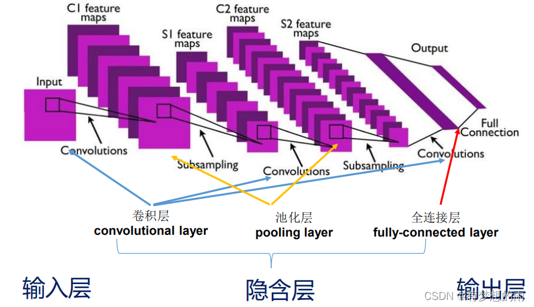

算法描述
卷积神经网络(convolutional neural network, CNN)，是一类包含卷积计算且具有深度结构的前馈神经网络。卷积神经网络是受生物学上感受野（Receptive Field）的机制而提出的。卷积神经网络专门用来处理具有类似网格结构的数据的神经网络。例如，时间序列数据（可以认为是在时间轴上有规律地采样形成的一维网格） 和图像数据（可以看作是二维的像素网格）。
数学原理
卷积是数学分析中的一种积分变换的方法，在图像处理中采用的是卷积的离散形式。这里需要说明的是，在卷积神经网络中，卷积层的实现方式实际上是数学中定义的互相关 （cross-correlation）运算，与数学分析中的卷积定义有所不同，使用互相关运算作为卷积的定义。 互相关是一个衡量两个序列相关性的函数，通常是用滑动窗口的点积计算来实现。而卷积则需要将滤波器经过反转。一个二维的卷积操作可以定义为下面的公式
代码实现
这里我们使用pytorch为基本框架来实现卷积神经网络
class CNN(nn.Module):
def __init__(self):
super(CNN, self).__init__()
self.model = nn.Sequential(
nn.Conv2d(3, 16, 3, 1, 1),
nn.MaxPool2d(2, 2),
nn.ReLU(),
nn.Conv2d(16, 32, 3, 1, 1),
nn.MaxPool2d(2, 2),
nn.ReLU(),
nn.Flatten(),
nn.Linear(32 * 8 * 8, 10)
)
def forward(self, x):
return self.model(x)
实验结果
实验记录了在CIFAR10上卷积网络相比较于全连接网络的优势
| 模型结构 | iter:60000 | iter:120000 | iter:300000 | iter:600000 |
| 卷积神经网络 | 36.60% | 47.35% | 54.13% | 57.81% |
| 全连接网络 | 26.99% | 33.52% | 38.91% | 42.75% |
杂项
附录:实验代码如下
from torch import nn
import torch
from torch.utils.data import DataLoader
from torchvision.datasets import CIFAR10
from torchvision.transforms import transforms
import torch.nn.functional as F
class CNN(nn.Module):
def __init__(self):
super(CNN, self).__init__()
self.model = nn.Sequential(
nn.Conv2d(3, 16, 3, 1, 1),
nn.MaxPool2d(2, 2),
nn.ReLU(),
nn.Conv2d(16, 32, 3, 1, 1),
nn.MaxPool2d(2, 2),
nn.ReLU(),
nn.Flatten(),
nn.Linear(32 * 8 * 8, 10)
)
def forward(self, x):
return self.model(x)
class FC(nn.Module):
def __init__(self):
super(FC, self).__init__()
self.model = nn.Sequential(
nn.Flatten(),
nn.Linear(32 * 32 * 3, 256),
nn.ReLU(),
nn.Linear(256, 128),
nn.ReLU(),
nn.Linear(128, 10),
)
def forward(self, x):
return self.model(x)
dataloader = DataLoader(CIFAR10(r'E:\data\cifar10', train=True, transform=transforms.ToTensor()), batch_size=64, shuffle=False)
model1 = CNN().cuda()
model2 = FC().cuda()
opt1 = torch.optim.Adam(model1.parameters())
opt2 = torch.optim.Adam(model2.parameters())
for e in range(10):
acc_cnn, acc_fc = 0, 0
for i, (x, y) in enumerate(dataloader):
x, y = x.to('cuda'), y.to('cuda')
out_cnn = model1(x)
out_fc = model2(x)
acc_cnn += torch.count_nonzero(torch.argmax(out_cnn, dim=1) == y)
acc_fc += torch.count_nonzero(torch.argmax(out_fc, dim=1) == y)
loss_cnn = F.cross_entropy(out_cnn, y)
loss_fc = F.cross_entropy(out_fc, y)
opt1.zero_grad()
loss_cnn.backward()
opt1.step()
opt2.zero_grad()
loss_fc.backward()
opt2.step()
print(f'e:{e} acc_cnn:{acc_cnn/60000*100:.4f} acc_fc:{acc_fc/60000*100:.4f}')